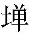

楚公子圍楚令尹。聘於鄭，且娶於公孫段氏段，鄭大夫子石也。圍娶其女。○圍將會諸侯之大夫於虢，以虢系鄭地，故行此聘、娶二事。。伍舉椒舉也。為介副使曰介。○補敘椒舉者，伏後垂櫜之請也。。將入館將入鄭而館。，鄭人惡之以其徒眾之多，恐懷詐以襲己也。，使行人子羽與之言子羽之言不載。，乃館於外楚乃舍於城外。圍不置對者，恃有逆女一著，可以逞也。○以上是聘時事，以下是娶時事，敘二事一略一詳。蓋以上一段引起下一段也。。
既聘，將以眾逆去聲。○楚欲以兵眾入鄭逆婦。。子產患之親迎何待以眾？其懷詐可知。，使子羽辭，曰：「以敝邑褊小，不足以容從去聲。者，請然去聲。聽命請於城外除地為。」令尹使太宰伯州犁對曰：「君辱貺寡大夫圍，謂圍：「將使豐氏撫有而室，以行婚禮。○按婚禮，主人筵几於廟，婿執雁而入。以。」圍布几筵，告於莊、共為請，非禮也。之廟而來貺，賜也。豐氏，子石女也。公孫段食邑於豐，故稱豐氏。而，汝也。「將使豐氏」八字，是鄭君謂圍之詞。○說鄭命圍鄭重。。若野賜之恭。，是委君貺於草莽也莊王，圍之祖。共王，圍之父。○說圍受命鄭重。，是寡大夫不得列於諸卿也若於城外為。不寧唯是，使我在野以受賜。，又使圍蒙其先君，將不得為寡君老，其蔑以復矣輕鄭君之賜，而棄之草莽。○一「是」字。。唯大夫圖之。」子羽曰：「小國無罪，恃實其罪逆女不得成禮，何顏復置身諸卿之列？○二「是」字。○兩句，應首段，喚起下段。。將恃大國之安靖己，而無乃包藏禍心以圖之疾撇上二「是」字。？小國失恃，而懲諸侯，使莫不憾者蒙，欺也。大臣曰老。言告先君而來，不得成禮於女氏之廟，是使我欺其先君，而辱寡君之命，不得為楚大臣，其無以歸國矣。○三句應二段。，距違君命，而有所壅塞不行是懼小國有何罪？恃大國而不設備，實其罪也。○二句是立言主腦。。不然，敝邑，館人之屬也，其敢愛豐氏之祧鄭之婚楚，本欲恃楚以安靖其國家，今楚以兵入逆，汝無乃包藏禍心以圖襲鄭？而，汝也。○一句喝破楚之本謀，妙。? 」
伍舉知其有備也，請垂櫜高。而入。許之櫜，弓衣也。垂櫜，示無弓也。。
篇首著「惡之」、「患之」四字，已伏後一段議論。州犁之對，詞婉而理直，鄭似無可措辭。子產索性喝出他本謀，使無從置辯，若稍婉轉，則楚必不聽。此小國所以待強敵不得不爾。